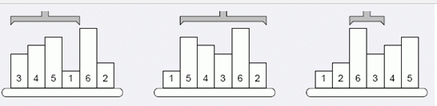

SORT 公司是一个专门为人们提供排序服务的公司，该公司的宗旨是「顺序是最美丽的」。
为了把工厂中高低不等的物品按从低到高排好序，工程师发明了一种排序机械臂。
它遵循一个简单的排序规则，第一次操作找到高度最低的物品的位置 $P_1$，并把左起第一个物品至 $P_1$ 间的物品（即区间 $[1,P_1]$ 间的物品）反序；第二次找到第二低的物品的位置 $P_2$，并把左起第二个至 $P_2$ 间的物品（即区间 $[2,P_2]$ 间的物品）反序……最终所有的物品都会被排好序。

上图给出有六个物品的示例，第一次操作前，高度最低的物品在位置 $4$，于是把第一至第四的物品反序；第二次操作前，第二低的物品在位罝六，于是把第二至六的物品反序……
你的任务便是编写一个程序，确定一个操作序列，即每次操作前第 $i$ 低的物品所在位置 $P_i$，以便机械臂工作。需要注意的是，如果有高度相同的物品，必须保证排序后它们的相对位置关系与初始时相同。
输入共两行，第一行为一个整数 $N$，$N$ 表示物品的个数。
第二行为 $N$ 个用空格隔开的正整数，表示 $N$ 个物品最初排列的编号。
输出共一行，$N$ 个用空格隔开的正整数 $P_1,P_2,P_3,\ldots,P_n$，$P_i$ 表示第 $i$ 次操作前第 $i$ 小的物品所在的位置。
注意：如果第$i$次操作前，第 $i$ 小的物品己经在正确的位置 $P_i$ 上，我们将区间 $[P_i,P_i]$ 反转 (单个物品)。
6 3 4 5 1 6 2
4 6 4 5 6 6
对于所有的数据，$1 \leq N \leq 100000$。
 Comet OJ
Comet OJ